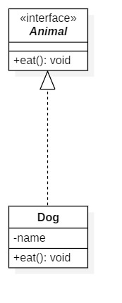
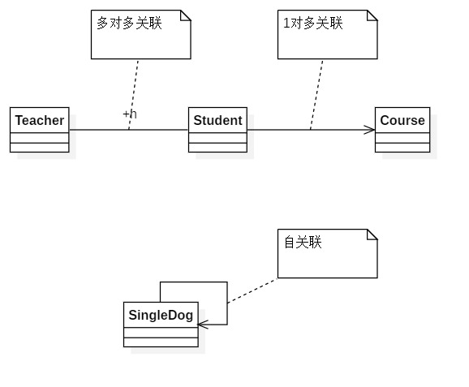

UML类图(Class Diagram)的作用是描述程序中类的信息及各个类之间的关系。
所有的面向对象（Object Oriented）语言都离不开类的概念，理解了程序中类的设计也就理解了程序的一半。但类的具体描述方式在各个类中都不一样，UML类图的提出是为了能够脱离语言的限制，抽象地描述各个类的信息及各个类之间的关系。这是UML类图的作用。
一般的类图分为三个部分。部分类图有五个部分。类图具体规范如下:
下图介绍了三种示例:
Car是一个实体类, 上面既有属性, 也有方法. Animal是一个接口. Number是一个实现类Comparable接口的实体类.
类之间的关系有: 泛化(Generalization)关系，实现(Realization)关系，组合(Composition)关系, 聚合(Aggregation)关系, 关联(Association)关系, 依赖(Dependency)关系.
1. 泛化关系
【泛化关系】：是一种继承关系,它指定了子类如何特化父类的所有特征和行为. 例如：老虎是动物的一种.
【箭头指向】：带三角箭头的实线，箭头指向父类.

2. 实现关系
【实现关系】：是一种类与接口的关系，表示类是接口所有特征和行为的实现
【箭头指向】：带三角箭头的虚线，箭头指向接口

3. 关联关系
【关联关系】：是一种拥有的关系,它使一个类知道另一个类的属性和方法；如：老师与学生，丈夫与妻子
【箭头指向】：带普通箭头的实心线，指向被拥有者
【代码体现】：一般情况下是成员变量

4. 聚合关系
【聚合关系】：是整体与部分的关系.如车和轮胎是整体和部分的关系.
【箭头指向】：带空心菱形的实心线，菱形指向整体
【代码体现】：成员变量

5. 组合关系
【组合关系】：是整体与部分的关系. 如:公司和部门(没有公司, 就不存在部门)
【箭头指向】：带实心菱形的实线，菱形指向整体
【代码体现】：成员变量

6. 依赖关系
【依赖关系】：是一种使用的关系,所以要尽量不使用双向的互相依赖。
【代码表现】：局部变量、方法的参数或者对静态方法的调用
【箭头指向】：带箭头的虚线，指向被使用者

人们需要依赖电脑工作, 但是并不是一直需要电脑.
关联, 聚合, 组合, 依赖的区别

各种关系的强弱顺序：泛化= 实现> 组合> 聚合> 关联> 依赖